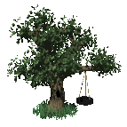

LINKS BRANCHING OFFSITE
EVERYDAY USEFULNESS
- cobalt.tools - download videos/gifs/audio files from social media
- 3d gif maker - make images into 3d rotating objects like prisms
- ezgif - gif maker and editor
- radio.garden - free worldwide live radio
- kumu - tool for visualising complex data maps like relationship charts/storyboards/systems
- obsidian - free note taking software/app marketed around privacy/local data hosting. i really enjoy the customization and ease of use.
- windy.com - live worldwide weather reporting and forecasting. we use this on the ship to figure out if the weather is severe enough to call an actual meteorologist
WEBMASTERY AND TOOLS
- MDN webdocs - my bible and beloved
- scripted - huge directory of snippets and site resources
- hover.css - library of css hover effects
- XP.css - css library for building interfaces that look like old windows xp UIs
- RV's javascript effects - lots of fun javascript effects like snow/floating orbs/fireworks on click
- ASCII text art generator - there are tons of styles available
- broider - generate embroidery-style box borders
- neocities comment widget - comment widget that works using google forms. neocities policies make this feature only accesible to supporters :/
- solar propagation widget - astrological data widget
- fc2 counter - popular site counter widget with many styles. sometimes clashes with ublock origin.
GRAPHICS AND PIXELS
- gifcities - internet archive of geocities webgraphics
- pixelsafari - check out the directory to find more related sites
- 88x31 button archive - old 88x31 buttons
- 88x31 button collection - more 88x31 buttons
- bonnibel's graphics directory - massive collection of graphics
- shishka's graphics collection - lots of anime graphics
OTHER'S DIRECTORIES
these are resource directories made by other users that i have sitting in my bookmarks. check them out!! i've tried not to double up too heavily on resources linked most often by other people so there is lots to see.- 10kph's webdev resources - massive list of web development resources
- doqmeat's resources - resources/graphics/snippets/tutorials
- sadgrl's resources - sadgrl is back from hiatus!! lots of snippets, resources, and even layout generators
- frutiger aero resources - mostly frutiger aero orientated (duh..) but there are plenty of other other interesting links
WIKIS AND READING
- beforeiplay.com - spoiler-free things that are useful to know when starting a game for the first time
- cutting room floor - wiki dedicated to unused/cut game content
- game making tools wiki - dedicated to collecting information relating to game development
- oceanofpdf - book pdfs
- project gutenburg - free classic literature ebooks
- biodiversity library - free libary of biodiversity oriented texts
FUN, FUNNY, AND INTERESTING
- ubari magic postcard maker - kaizo slumber's n64 styled postcard maker with relaxing ambient tracks
- random wikipedia article tierlist - daily tierlist to make
- neil.fun - fun and silly browser games. infinite craft, internet roadtrip, the password game, and more.
- movie smoke database - 2000+ screencaps of actors smoking. isn't it fascinating?
- noclip - noclip and view various video game maps
- khinsider - listen to and download video game OSTs
- lostgamer - geoguesser with popular video game maps
- finfin archive - i love finfin
- astronomy picture of the day - with archives dating back to 1995.
- MODIS satellite image of the day - interesting satellite photos of the earth taken during orbit, mostly focused on meteorlogical events